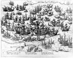

[Frans Hogenberg, Abbildungen zur Europäischen Geschichte insbesondere zur Geschichte der Niederländischen Kriegen in den Jahren 1535-1600.] [Köln, circa 1569-1600.] -- (COLLBN 20077 B 4)
In de reeks gravures die de nummers 114 tot en met 117 omvat, begint de oorlogsprent als type vaste vorm aan te nemen. De prentkunstenaars die zich met dit genre bezighielden, deden aan het eind van de zestiende en gedurende het grootste gedeelte van de zeventiende eeuw over het algemeen geen pogingen om een beeld te leveren dat de oorlogshandelingen dicht bij de beschouwer brengt: ze ‘nemen afstand’. Een van deze graveurs, die door de overvloedige productie uit zijn atelier aan het standaard-uiterlijk van de Nederlandse historieprent in het algemeen en de oorlogsprent in het bijzonder vorm heeft gegeven, was Frans Hogenberg.
In de hier tentoongestelde bundeling van verbeeldingen van historische episoden is de weergave van de Spaanse Armada de tweehonderdeenennegentigste(!) prent. Die onoverwinnelijke vloot, door de Spaanse koning Filips II in 1587 geformeerd, was in 1588 in het Kanaal aangekomen, meer dan honderddertig schepen sterk. De Engelsen, tegen wie die vloot was uitgevaren, lieten zich niet afschrikken; hun admiraal, Francis Drake, nam de handschoen op en versloeg de aanvallers.
Van de strijd die daarvoor geleverd moest worden, is op de prent niet veel te zien. Er vallen hier en daar wat schoten, er zijn wat zinkende schepen, en men krijgt het idee dat Hogenberg heeft willen laten zien hoe een hele vloot van logge oorlogsschepen in een val is gelopen en nu omringd wordt door kleine, wendbaarder vaartuigen. Dat is alles wat er letterlijk te zien is. Maar hoe de zeeslag zich precies heeft afgespeeld valt uit de manier van weergeven niet af te lezen. Het is merkwaardig dat deze onderkoelde manier van tonen van een totaaloverzicht, vanuit een hoog, buiten-realistisch standpunt, zo lang heeft standgehouden. Pas aan het eind van de zeventiende eeuw (zie nummer 119) kwam er een nieuwe manier in zwang voor het weergeven van oorlogsschermutselingen, waarbij zo te zien het effect van een informatief ooggetuigeverslag wordt nagestreefd.
Hogenbergs prenten zijn evenwel, op hun heel specifieke manier, óók informatief. Dat, wat de Armada betreft, een en ander zich in het Kanaal afspeelde, wordt getoond door onder en boven twee kustlijnen weer te geven. Dat zich daar in werkelijkheid een ruime zee van tientallen kilometers breed bevindt doet daarbij niet ter zake. Getoond moest worden dat Engeland geïnvolveerd was en dat -- zie de schepen in de havens -- de Nederlanders zich afzijdig konden houden. Ook vond Hogenberg het niet nodig de omvang van de Armada te laten zien: het waren schijnbaar onneembare oorlogsbodems die daar toen, in 1588, kwamen aanvaren, en het leek er wel op dat ze het hele Kanaal vulden -- die ‘mededeling’ achtte hij voldoende.
Literatuur
- F. Muller, De Nederlandsche geschiedenis in platen. Beredeneerde beschrijving van Nederlandsche historieplaten, zinneprenten en historische kaarten. Amsterdam 1863-1882. 4 dln, I, p. 39-60, nr. 413, en IV, p. 35-39, nr. 413.
- F. Hogenberg [und] A. Hogenberg, Geschichtsblatter. Hrsg. und eingel. von F. Hellwig [Faks.-Ausg.] Nördlingen 1983.
| vorige pagina | top pagina |